スーパーリオエース2
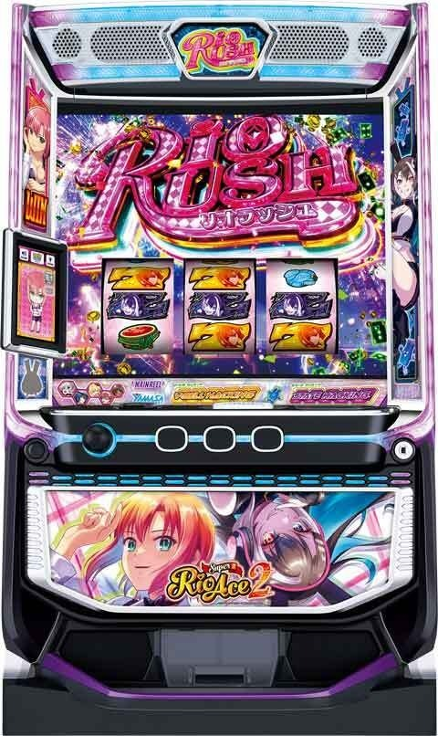
【天井情報】
通常時を750G＋α消化でBBに当選。
AT非当選のボーナスを7回連続で引いた後、8回目のボーナスがATに変換される。
設定変更時は4スルー後5回目に短縮。
【リセット判別】
不明
【有利区間について】
エンディング等で有利区間リセット時は「ノワールクライシス」に突入。
狙い目
【リセット狙い】
ボーナス間
230Gから(0スルーのみ）
スルー天井
3スルーから
【ゲーム数天井狙い】
500Gから
【ボーナススルー天井狙い】
6スルーから
【AT間天井狙い】
AT間2400Gから AT当選まで
※AT間3000G過ぎくらいに天井がありそう？
※AT間ハマりゲーム数の計算方法は、「その他」→「履歴」の項目を確認
【ゾーン狙い】
100Gゾーン
95Gから
300Gゾーン
295Gから
※規定G数後に液晶G数の色が白に戻ったらやめ
【ハワードカウンター狙い】
残り5回から
残り8回以内なら30-50Gくらいボーナス間のボーダー下げれる？
【示唆関連の押し引きについて】
サブ液晶のチップ
ナヴィ 200Gからボーナス当選まで
ノワール AT当選まで
テイル、アリス 250Gからボーナス当選まで
ヴィヴィアン＆メリッサ 少しボーダー下げるくらい？
リバースポイント
保有ポイント大は解放まで（下位保有ポイント大の画像）
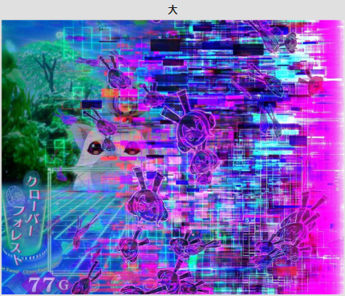
参考元 なな徹
アイキャッチ
全員 ボーナスかAT当選まで
【有利区間関連狙い】
不明
やめ時
特に続行する要素が無ければ即やめ。
上位AT後もノワールクライシス抜け後、特に続行する要素が無ければやめ。
VベルハッキングというVベル成立時必ずレア役当選する状態がある。この状態時は抜けるまで打った方が良さそう。
その他
履歴
ART 通常時のボーナス（70-100枚くらい）、AT開始の信号、またはAT中のリオチャンスやボーナス
RB AT突入の信号、AT中のリオチャンスやボーナス後のAT再突入時の信号、AT終了時の信号
20:45 18回目のARTは初当たりボーナスで20:48にAT突入。20:52のRBでAT終了
最後はAT間238G（139+99）、ボーナス間99Gとなる
20:48のAT当選までのAT間ハマりは1216G（321+479+416）
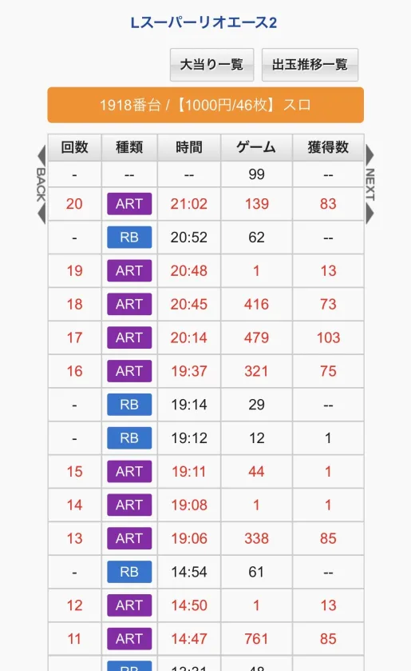
エースモード期待度アップ演出
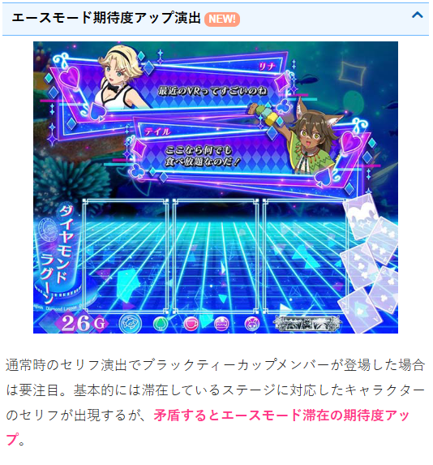
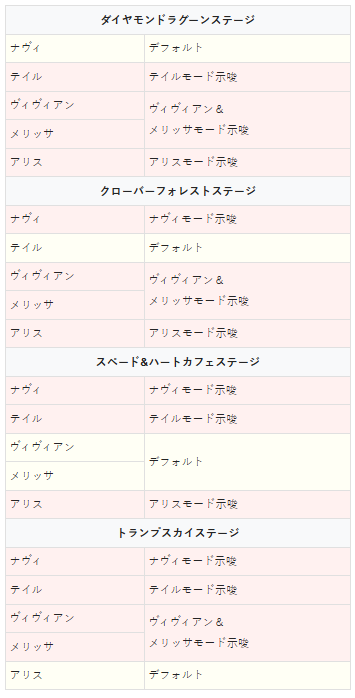
エースモード、アイキャッチ
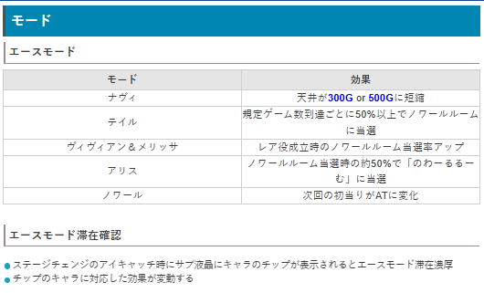
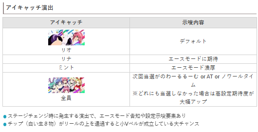
リバースポイント
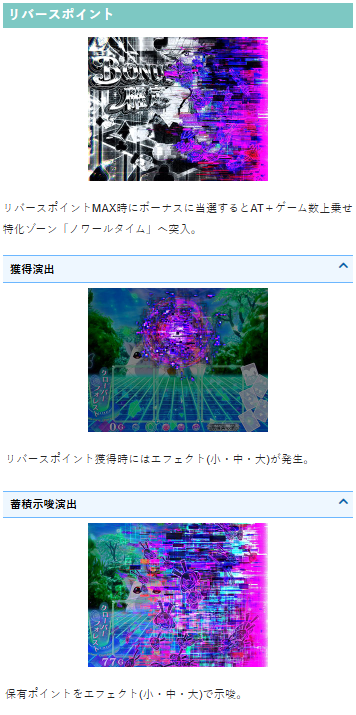
規定ゲーム数
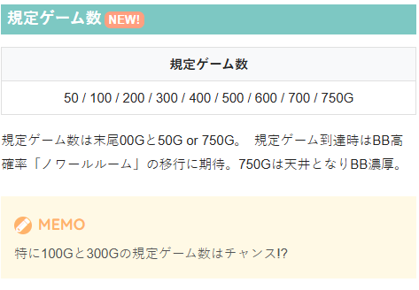
ノワールルーム
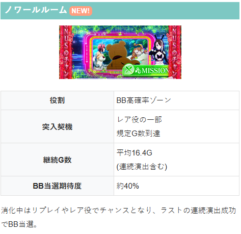
内部状態・ステージ
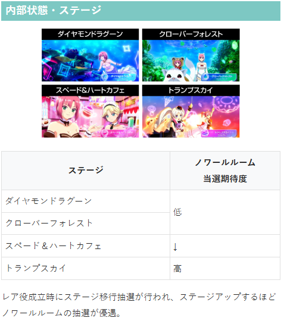
規定リプレイ回数（ハワードカウンター）
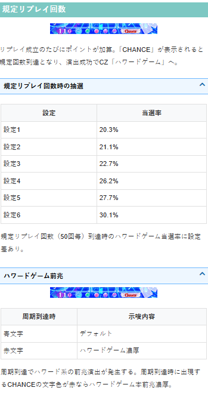
Vベルハッキング
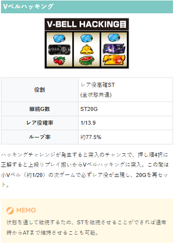
参考元
かめとうさぎのパチスロブログ
基本情報
- メーカー: 山佐ネクスト
- 機械割: 97.7% 〜 112.1%
- 導入開始日: 2026年05月11日（月）
- ゲーム性概要: ●通常時は規定ゲーム数消化やレア役でBIG高確率ゾーン、リプレイの規定回数でCZを抽選 ●ボーナスのAT当選期待度は約50% ●AT「リオラッシュ」は純増約2.5枚/G、初期ゲーム数50Gのゲーム数上乗せ型 ●AT中はカジノバトル勝利→リオチャンスで報酬を決定 ●上位CZ「ノワールクライシス」成功で上位ATへ突入 ●上位ATは純増約4.5枚/Gで、終了後は再び上位CZへ移行 ●全状態で発生する2種類の「ハッキング」が勝利のカギを握る！


打ち方
打ち方・小役
左リールBAR狙い（小役狙い）
「最初に狙う絵柄」 左リール上段付近にBARを目押し。 スイカが上段に停止したときを除き、中・右リールはフリー打ちでOKだ。 小Vベルの強弱は判別できないが、最もスムーズにレア役を判別できる打ち方といえる。
「スイカ停止時」 中リールに赤7を目安にBARを狙おう。左リールはこぼしがないのでフリー打ちで問題ない。
「レア役の停止例」 レア役はすべてリプレイフラグ（ステートハッキング目は1枚）。
「小Vベル」 内部的に強弱があって、左リールBAR狙い時は判別不可。ただし、判別できなくても出玉的な損はない。
左リール赤7狙い（小役狙い）
「最初に狙う絵柄」 左リール上段付近に赤7を狙う。 小Vベルは弱と強の2種類あって、左リール赤7狙い時は、強ベルが成立時に判別できるのがメリット（左リールBAR狙い時は判別できない）。演出に応じて、BAR狙いと使い分けるのもオススメだ。
「赤7下段停止時」 中リールに赤7を目安にBARを狙う。右リールは取りこぼしがないのでフリー打ちでOK。 その他の停止形は中＆右リールフリー打ちで消化しよう。
「小役の停止例」
「小Vベル」
解析情報通常時
小役関連
レア役確率
| 役 | 確率 |
|---|---|
| 弱チェリー | 1/ 71.6 |
| スイカ | 1/ 84.1 |
| チャンスリプレイ | 1/ 248.4 |
| チャンス目 | 1/ 542.1 |
| 強チェリー | 1/ 695.6 |
| Vベルハッキング目 | 1/ 721.0（4択ナビ発生） |
| ステートハッキング目 | 1/ 2884.0 |
レア役合算確率
| 役 | 確率 |
|---|---|
| 弱レア役（弱チェリー・スイカ・チャンスリプレイ） | 1/ 33.5 |
| 強レア役（チャンス目・強チェリー） | 1/ 304.7 |
| 全レア役 | 1/ 30.2 |
Vベルシステム
約1/20で成立する小Vベルの次ゲームは、約20%でレア役が出現。小Vベルは弱と強の2種類があって、左リール赤7狙い時は強小Vベルを判別できる。
小Vベル DATA
| 確率 | 約1/20 |
|---|---|
| 種類 | 弱小Vベル、強小Vベル ※左赤7狙い時のみ判別可能 |
| 効果 | 次ゲームの約20%でレア役停止 ※強小Vベル後はレア役濃厚 |
小Vベル連続時の効果
| 連続パターン | 次ゲームの効果 |
|---|---|
| 弱小Vベル→弱小Vベル | レア役濃厚 |
| 弱小Vベル→強小Vベル | 強レア役濃厚 |
［小Vベルの種類］
「サブ液晶タッチでレア役期待度を示唆」 小Vベル成立後、サブ液晶をタッチした時のキャラのセリフの色でレア役期待度を示唆。赤なら強レア役濃厚だ。
サブ液晶タッチ時の色別・レア役出現期待度
| 色 | 期待度 |
|---|---|
| 白 | 9.5% |
| 青 | 25.2% |
| 黄 | 100% （強レア役期待度：低） |
| 緑 | 100% （強レア役期待度：中） |
| 赤 | 100% （強レア役濃厚） |
サブ液晶のオートタッチ機能をオンにしておくと、自動でタッチしてセリフを表示してくれる。
内部状態関連
内部状態解説
おもにトランプスカイステージで高確が示唆される。
内部状態
通常・高確準備・高確の3種類
高確中はノワールルーム当選期待度がアップ
弱チェリーとスイカで内部状態の昇格を抽選
内部状態移行率
| 役 | 通常→高確準備 | 通常→高確 | 高確準備→高確 |
|---|---|---|---|
| 弱チェリー | 75.0% | 25.0% | 100% |
| スイカ | 37.5% | 12.5% | 50.0% |
スイカは50%で状態アップ、弱チェリーは必ず現在の状態以上へアップする。
モード
エースモード
通常時を有利に進めてくれるモードで、キャラによって性能が変化。 ステージチェンジのアイキャッチ時に、サブ液晶にキャラのチップが表示されるとエースモード滞在濃厚だ。
エースモードごとの性能
| モード | 性能 |
|---|---|
| ナヴィ | 天井が300Gor500Gに短縮 |
| テイル | 規定ゲーム数到達ごとに 50%以上でノワールルームに当選 |
| ヴィヴィアン＆メリッサ | レア役成立時のノワールルーム当選率アップ |
| アリス | ノワールルーム当選時の 約50%で「のわーるるーむ」に当選 |
| ノワール | 次回の初当りがATに変化 |
モード名とチップに表示されているキャラはリンクしている（ナヴィのチップならナヴィモード）。
ハワードカウンター
ハワードカウンター解説
規定リプレイ回数に応じてハワードゲームを抽選。カウンターで残り回数が表示されることもある。 カウンターにCHANCE文字が表示されれば規定回数到達を示唆。赤文字のCHANCEならハワードゲーム濃厚だ。
ハワードカウンター（リプレイ規定回数）
リプレイ50回ごとにハワードゲームを抽選
CHANCE文字出現で規定回数到達、色で本前兆期待度を示唆
規定リプレイ（50回）到達時ハワードゲーム当選率
| 設定 | 当選率 |
|---|---|
| 1 | 20.3% |
| 2 | 21.1% |
| 3 | 22.7% |
| 4 | 26.2% |
| 5 | 27.7% |
| 6 | 30.1% |
［残り回数表示］
［CHANCE表示］
［ハワード系の前兆が発生］ 通常の前兆とは異なり、ハワードカウンター経由の前兆ではハワード系の専用演出が発生する。
ゲーム数抽選
ゲーム数消化の抽選
ゲーム数は液晶の左下に表示。
ゲーム数消化時の抽選
規定ゲーム数は50G or 100G or 200G or 300G or 400G or 500G or 600G or 700G or 750G（天井）
100Gと300Gは期待度が高い
規定ゲーム数到達でノワールルームに当選 （750Gは天井なのでボーナス濃厚）
規定ゲーム数到達時にノワールルームへの移行を抽選。750Gは天井なので、ボーナスに当選する。
「ゲーム数カウンターの色」 ゲーム数カウンターの色は白がデフォルト。 青になれば規定ゲーム数到達時の前兆開始を示唆、赤はノワールルーム当選の大チャンスだ。
「ポグ出現でゲーム数前兆」 液晶上部にポグが発生すればゲーム数前兆。最終的に連続演出でノワールルームの当否が告知される。
ノワールルーム（ボーナス高確）
ノワールルーム概要
レア役や規定ゲーム数到達で抽選されるボーナスの高確率ゾーン。消化中はリプレイとレア役でボーナスを抽選していて、ラストの連続演出でボーナスの当否をジャッジ。 液晶両サイドの帯の色が変化するほど期待度がアップする。 上位版の「のわーるるーむ」なら、成功すればAT直行濃厚だ。
ノワールルーム性能
| 突入契機 | レア役・規定ゲーム数消化時の抽選 |
|---|---|
| 平均ゲーム数 | 約16G（ラストの連続演出込み） |
| 滞在中の抽選 | リプレイ・レア役でボーナスを抽選 ※のわーるるーむは成功でAT直行 |
| 成功期待度 | 約40% |
| 備考 | 終了してもループする可能性あり |
ノワールルーム確率
| 設定 | 確率 |
|---|---|
| 1 | 1/131.9 |
| 2 | 1/130.4 |
| 3 | 1/127.6 |
| 4 | 1/121.2 |
| 5 | 1/119.1 |
| 6 | 1/116.2 |
「帯色変化」 画面左右の帯色が赤まで行けば期待度大幅アップ！
「のわーるるーむ」 のわーるるーむ中はタイトル表示が変わるだけでなく、背景が赤になるので、見た目でもわかりやすい。
ボーナス当選率
| 役 | 当選率 |
|---|---|
| リプレイ | 10.2% |
| 弱レア役 | 25.0% |
| 強レア役 | 62.5% |
ノワールルーム中はリプレイでも約10%でボーナスに当選。ラストの連続演出中も同様の数値で抽選される。
ハワードゲーム（CZ）
ハワードゲーム概要
通常時にリプレイが50回成立するたびに抽選されるCZ。継続ゲーム数は10Gで、消化中は毎ゲームATを抽選する。
ハワードゲーム性能
| 突入契機 | リプレイ50回ごとの抽選（ハワードカウンター） |
|---|---|
| 継続ゲーム数 | 10G＋α |
| 滞在中の抽選 | 小役成立ごとにAT抽選（レア役はチャンス） |
| 成功期待度 | 約50% |
［小役成立時のジャッジ］
AT当選率
| 役 | 当選率 |
|---|---|
| リプレイ | 15.2% |
| 弱レア役 | 50.2% |
| 強レア役 | 100% |
残りゲーム数が??になった後は、弱レア役でもAT当選濃厚になる。
ハッキング
Vベルハッキング
ハッキングチャレンジの4択に正解して、上段にリプレイが揃えばVベルハッキングへ突入。 Vベルハッキングは20G間のST型レア役高確状態で、レア役が成立すると20Gが再セットされる。
ハッキングは状態を貫通して継続するため、通常時→ボーナス→ATとレア役高確状態を維持したまま、ATまで到達させることも可能だ。
Vベルハッキング性能
| 突入契機 | ハッキングチャレンジ成功 ※4択当て正解で上段リプレイ停止 |
|---|---|
| 継続ゲーム数 | 20GのST型（レア役で再セット） |
| 滞在中の抽選 | 小Vベル（約1/20）を引けば 次ゲームで必ずレア役が停止 |
| 滞在中のレア役確率 | 1/13.9 |
| ループ率 | 77.5% |
Vベルハッキング目のフラグが成立したゲームでは必ず4択の押し順当てが出現。 択当てに正解すれば上段にリプレイが揃って、Vベルハッキング目入賞となる。 ちなみに、ナビを無視して左1stで消化した場合、内部的に中→左→右で押したものとして抽選。この場合、上段リプレイ揃いではなく、中段にリプ・リプ・ベルが止まれば成功だ。
Vベルハッキングの注目ポイント
通常時のハッキングタイム中のレア役はノワールルーム当選濃厚
AT中は必ず上乗せ高確状態も重なるため 77.5%で上乗せがループするハイチャンス状態
ステートハッキング
ステートハッキング目（下段リプレイ）を契機に突入する、20GのST型状態転送ゾーン。 消化中にレア役成立orBARが揃うと、現在滞在している状態から1段階上の状態（報酬）へ昇格して、20Gが再セットされる。 状態を上げるごとに獲得報酬もアップ。4段階目を成功させればノワールクライシス（上位CZ）を獲得できる。
ステートハッキング性能
| 突入契機 | ステートハッキング目 |
|---|---|
| 継続ゲーム数 | 20GのST型（レア役orBAR揃いで再セット） |
| 滞在中の抽選 | レア役orBAR揃いで状態（報酬）が1段階アップ |
| 段階突破率 | 50.4% |
段階ごとの報酬
| 状態 | 次段階に状態がアップした時の報酬 |
|---|---|
| 通常時（1段階目） | ボーナス |
| ボーナス当選状態（2段階目） | AT |
| AT当選状態（3段階目） | ノワールタイム |
| ノワールタイム当選状態（4段階目） | ノワールクライシス（上位CZ） |
ステートハッキング目が停止した状態によって報酬パターンは異なるが、基本的には通常時→ボーナス→AT→ノワールタイム→上位CZ獲得の順で報酬がアップする。
「BARを狙え」 BARが揃えば状態が昇格。矢印＆狙えの色でBAR揃い期待度が変化する。
CZ・ボーナス抽選
ボーナス直撃確率
ノワールルームやハワードゲームを経由しないボーナス直撃確率は高設定ほど高い。
［ヴィヴィアン＆メリッサモード以外］ ノワールルーム当選率
| 役 | 通常・高確準備 | 高確 |
|---|---|---|
| 弱チェリー | 0.8% | 30.1% |
| スイカ | 0.8% | 30.1% |
| チャンスリプレイ | 10.5% | 50.0% |
| チャンス目 | 50.0% | 100% |
| 強チェリー | 50.0% | 100% |
［ヴィヴィアン＆メリッサモード中］ ノワールルーム当選率
| 役 | 通常・高確準備 | 高確 |
|---|---|---|
| 弱チェリー | 12.9% | 40.2% |
| スイカ | 12.9% | 40.2% |
| チャンスリプレイ | 43.8% | 70.3% |
| チャンス目 | 75.0% | 100% |
| 強チェリー | 75.0% | 100% |
リバースポイント（穢れ要素）
リバースポイント概要
CZ失敗など、さまざまな契機で内部的にリバースポイントを獲得。 MAXに到達すると上画像のように、次のボーナス当選時にリバースポイントが解放されてAT当選＋ノワールタイムに突入する。
「獲得示唆」
「蓄積示唆」 獲得示唆・蓄積示唆ともに、小・中・大の3パターンが存在する。
CZ・AT当選率
スイカ成立時の次回ノワールルーム成功当選率
| 設定 | 当選率 |
|---|---|
| 1 | 10.2% |
通常時のスイカ成立時に、次に突入するノワールルームを成功確定にするかどうかを抽選。 スイカ成立時の第3停止後、PUSHボタン両サイドにあるランプの光り方で当選期待度を示唆する。
［PUSHボタン両サイドのランプ］
解析情報ボーナス時
ボーナス
ビッグボーナス概要
初当りのメインはボーナスで、消化中はATを抽選。最終ゲーム（終了画面）のレア役はAT当選濃厚だ。
ビッグボーナス性能
| 突入契機 | ノワールルーム中の抽選、直撃抽選など |
|---|---|
| 継続ゲーム数 | 31G |
| 純増 | 約2.5枚/G（上位AT中は約4.5枚/G） |
| 滞在中の抽選 | 成立役に応じてAT抽選、 AT当選後はノワールタイムのストック抽選 |
| AT期待度 | 約50% |
| 備考 | 終了画面のレア役はAT濃厚（初当り時のみ） |
「3種類の告知タイプ」 ボーナス開始時に3種類から、任意で告知タイプを選択可能。 選択したタイプのキャラが歌う新規楽曲も堪能できる。
告知タイプ
| 告知タイプ | 特徴 |
|---|---|
| リオ ［チャンス告知］ | 「ミッション」に発展すればチャンス、 成功すればAT濃厚 |
| アリス ［完全告知］ | 「アリス悩み中」に移行すれば告知発生のチャンス、 アリスの承認演出発生でAT濃厚 |
| ノワール ［後告知］ | ボーナス終了時の演出に成功すればAT濃厚 |
「終了画面でのレア役」 ボーナス終了画面でのレア役はAT当選濃厚。 ただし、AT中のボーナスの場合、終了画面でレア役を引いてもノワールタイムストック濃厚とはならない。 また、画面左上に表示される可能性があるサインにも注目だ。
AT当選率
| 役 | 当選率 |
|---|---|
| 下記以外 | 1.0% |
| 弱レア役 | 25.0% |
| 強レア役 | 62.5% |
リオラッシュ（AT）
AT概要
ゲーム数管理型のATで、レア役での直乗せやカジノバトル勝利で報酬を獲得しつつ、ロング継続を目指すゲーム数だ。
リオラッシュ（AT）性能
| 突入契機 | CZ成功、直撃抽選、ボーナス中の抽選など |
|---|---|
| 初期ゲーム数 | 50G＋α |
| 純増 | 約2.5枚/G |
| 滞在中の抽選 | 内部状態移行、ゲーム数上乗せ、カジノバトル |
| 備考 | 33Gごとに周期抽選でカジノバトル抽選 |
上乗せ・カジノバトル確率
| 当選種別 | 確率 |
|---|---|
| ゲーム数上乗せ | 1/79.1 |
| カジノバトル | 1/80.6 |
［AT中ステージ］ カジノシティ＜ムーンライトロード＜ルーフトップバルコニーの順で内部状態の期待度アップ。
AT中ステージの示唆
| ステージ | 示唆 |
|---|---|
| カジノシティ | 通常示唆 |
| ムーンライトロード | 高確示唆 |
| ルーフトップバルコニー | 超高確示唆 |
［カジノバトル勝利時の報酬表示］ リール右側のマップでカジノバトル勝利時（勝利＝リオチャンス）のリオチャンスレベルを示唆。 青＜黄＜緑＜赤の順で期待度がアップ、ノワールアイコンはカジノバトルでノワールが登場するかも（ノワールに勝てば上位CZ獲得）。
周期抽選
AT中はゲーム数がリールの左側に表示。 33G消化ごと にカジノバトルが抽選される。
ゲーム数部分がCHANCEに変化したら前兆！
ゲーム数上乗せ当選率
| 役 | 当選率 |
|---|---|
| 弱チェリー | 27.7% |
| スイカ | 3.1% |
| チャンスリプレイ | 100% |
| チャンス目 | 100% |
| 強チェリー | 100% |
チャンスリプレイ以上は上乗せ濃厚。スイカの当選率は低いが、当選時は＋30G以上濃厚となる。
BTC上乗せ
リオチャンスの報酬の一部で突入する、1G完結の上乗せ特化ゾーン。 当該ゲームでレア役を引けば＋100G以上濃厚だ。
BTC上乗せ性能
| 突入契機 | リオチャンスの報酬の一部 |
|---|---|
| 継続ゲーム数 | 1G |
| 消化中の抽選 | 成立役に応じた上乗せ抽選、 レア役成立で＋100G以上 |
キャラごとのタイプと平均上乗せ
| キャラ | タイプ | 平均上乗せ |
|---|---|---|
| ナヴィ（青） | 倍率上乗せ | 50G |
| テイル（緑） | トリガー上乗せ | 50G |
| ヴィヴィアン＆メリッサ（赤） | ルーレット上乗せ | 50G |
| アリス（紫） | フリーズ上乗せ | 166G |
［アリス］
カジノバトル当選率
| 役 | 通常 | 高確 | 超高確 |
|---|---|---|---|
| 下記以外 | ー | ー | 3.9% |
| 弱チェリー | 1.2% | 2.0% | 100% |
| スイカ | 30.1% | 60.2% | 100% |
| チャンスリプレイ | 20.3% | 50.4% | 100% |
| チャンス目 | 60.2% | 100% | 100% |
| 強チェリー | 80.1% | 100% | 100% |
弱チェリーは内部状態昇格やゲーム数上乗せ当選率が高い分、カジノバトル当選率は低めだ。
AT中・内部状態移行率
| 役 | 通常→高確 | 通常→超高確 | 高確→超高確 |
|---|---|---|---|
| 弱チェリー | 50.0% | 10.2% | 100% |
| チャンスリプレイ | ー | 10.2% | 10.2% |
内部状態昇格のメインは弱チェリー。 高確中の弱チェリーは必ず超高確へ移行する。
カジノバトル
カジノバトル概要
4G継続の自力バトルで、ベル成立時に勝利抽選をおこなう。レア役は勝利濃厚だ。
カジノバトル性能
| 突入契機 | AT中の抽選 |
|---|---|
| 継続ゲーム数 | 4G |
| 滞在中の抽選 | ベルで勝利抽選、レア役は勝利濃厚 |
| 平均期待度 | 約57% |
| 備考① | 勝利後はリオチャンスへ移行 ※ノワールに勝利した時は上位CZも獲得 |
| 備考② | ベル4連やベル0回は勝利濃厚 |
「バトルの対戦相手は4種類」
キャラごとの出現割合と勝利期待度
| 対戦相手 | 出現割合 | 期待度 |
|---|---|---|
| オーリン | 49.6% | 約50% |
| クラーク | 33.6% | 約60% |
| ローザ | 13.3% | 約75% |
| ノワール | 3.5% | 約55% |
ノワールに勝利した場合。リオチャンスに加えて上位CZの権利も獲得できる。
勝利期待度
| 役 | オーリン | クラーク | ローザ | ノワール |
|---|---|---|---|---|
| ベル | 10.2% | 20.3% | 31.5% | 15.2% |
| レア役 | 100% | |||
| ベル4回 | 100% | |||
| ベル0回 | 100% |
ベル揃い時の勝利期待度は対戦相手によって変化。 対戦相手不問でレア役は勝利濃厚、4G間オールベルやベル0回の場合も勝利濃厚だ。
リオチャンス
リオチャンス概要
カジノバトル勝利後に突入する報酬決定ゾーン。 液晶に表示されたカードが1Gごとにスライドしていき、小役を引くとその報酬をセット。次ゲームで小役を引けば当該カードの報酬を獲得できる（2G連続で小役入賞で報酬獲得）。 この流れを、いずれかの報酬（レベルアップを除く）を獲得するまで続ける。
リオチャンス性能
| 突入契機 | カジノバトル勝利後 |
|---|---|
| 継続ゲーム数 | レベルアップを除く報酬獲得まで |
| 滞在中の抽選 | 小役が2連続で入賞すると報酬を獲得、 レア役は配列内の最高報酬に書き換え |
| 備考 | リオチャンスレベルでカードの種類が変化 |
レア役の成立タイミング別の書き換え
| 1G目（報酬セット前） | 配列内で最高の報酬をセット （次ゲーム小役入賞で報酬獲得） |
|---|---|
| 2G目（報酬セット後） | 配列内で最高の報酬を獲得 |
小Vベルで報酬をセットした場合、次ゲームでレア役に期待できるためチャンス。 強小Vベルでセットした場合は、次ゲームのレア役濃厚＝最高報酬獲得濃厚になる。
報酬一覧
ゲーム数上乗せ
赤7（ボーナス獲得）
リオラッシュ（ATストック）
ノワールタイム
リオタイム
BTC上乗せ（1G完結のキャラ上乗せ）
リオラッシュEX（上位AT獲得）
レベルアップ（リオチャンスレベルが1段階昇格）
レベルアップのみ、獲得してもリオチャンスが終わらず、リオチャンスレベルが1段階昇格して継続する。
「1G目（報酬セット前）」 いずれかの小役を引くまで、配列内のカードが順番にスライド。
「2G目（報酬セット後）」 小役を引けばセットされた報酬を獲得。小役を引けなかった場合は再び1G目に戻る。
［リオチャンスレベル］ 背景の色でレベルを示唆。青＜黄＜緑＜赤＜紫の順で高レベルに期待できる。
リオチャンスレベルごとの報酬
| レベル | 最低報酬 |
|---|---|
| 青 | 全報酬の可能性あり |
| 黄 | ボーナス以上 |
| 緑 | BTC上乗せ以上 |
| 赤 | ATストック以上 |
| 紫 | ノワールタイム以上 |
ノワールタイム
ノワールタイム概要
10G＋α継続するATゲーム数上乗せ特化ゾーンで、消化中は全役でゲーム数上乗せを抽選。 上乗せ時の一部でリバースシステムが発動すれば、ノワールタイムの残りゲーム数が毎ゲーム1ずつ加算されていく。
ノワールタイム性能
| 突入契機 | リオチャンスの報酬など |
|---|---|
| 継続ゲーム数 | 10G＋α |
| 滞在中の抽選 | 成立役に応じてATゲーム数上乗せ抽選 ※ベルはチャンス、レア役は上乗せ濃厚 |
| 平均上乗せ | 約105G |
| 備考 | 上乗せ時の一部でリバースシステム発動 |
「狙えカットイン」 紫7が揃えばリバースシステム発動濃厚。 カットインの色にも注目だ。
「リバースシステム」 滞在中は通常のATゲーム数上乗せ抽選に加え、特化ゾーンの残りゲーム数が1Gずつ加算されていく。
「上乗せ時のノワールのアクション」 ●がおー
●べー
●キス顔
上乗せ時の表情
| 表情 | 上乗せ示唆 |
|---|---|
| がおー | デフォルト |
| べー | ＋20G以上濃厚 |
| キス顔 | ＋50G以上濃厚 |
ゲーム数上乗せ当選率（非リバースシステム発動中）
| 役 | 当選率 |
|---|---|
| ベル | 32.4% |
| レア役 | 100% |
紫7揃い性能
| 確率 | 約1/30 |
|---|---|
| 非リバース発動中 | 上乗せ20G以上＋リバースシステム発動 |
| リバースシステム発動中 | リバースクラッシュ（0G連）発生 |
「リバースクラッシュ」 リバースシステム発動中に再度紫7が揃えば、平均105Gの上乗せに期待できるリバースクラッシュ（0G連）が発動する。
リオタイム
リオタイム概要
リオチャンスのストック特化ゾーン。平均3.3個のストック獲得に期待できる。
リオタイム性能
| 突入契機 | リオチャンスの報酬など |
|---|---|
| 継続ゲーム数 | 20G |
| 滞在中の抽選 | 成立役に応じてリオチャンスストックを抽選 ※リプレイはチャンス、レア役はストック濃厚 |
| 平均ストック数 | 約3.3個 |
強レア役なら複数ストック濃厚だ。
「リオのアクション」 ●ピース
●ウインク
●キス
ストック時の表情
| 表情 | ストック数示唆 |
|---|---|
| ピース | 1個以上濃厚 |
| ウインク | 2個以上濃厚 |
| キス | 3個以上濃厚 |
ノワールクライシス（上位CZ）
上位CZ概要
上位ATをかけたCZで、レア役や狙えカットイン発生時に7が揃えば成功となる。
ノワールクライシス（上位CZ）性能
| 突入契機 | カジノバトルでノワールに勝利時、上位AT後、 エンディング後、ステートハッキングでの昇格 |
|---|---|
| 継続ゲーム数 | 12G＋α |
| 成功期待度 | 約50% |
| 滞在中の抽選 | 成立役に応じて上位AT抽選、 レア役と7揃いは成功濃厚 |
「狙えカットイン」
7揃い時の報酬
| パターン | 報酬 |
|---|---|
| 金7揃い | 上位AT＋ジョーカーリオチャンス |
| 紫7揃い | 上位AT＋ノワールタイム |
7が揃えば上位AT濃厚。 7揃いを契機に上位ATに突入する場合は金7と紫7の揃った絵柄に応じた報酬を獲得できる。
［ジョーカーリオチャンス］ 上位AT専用の見た目が変化したリオチャンス。内容は通常のリオチャンスと同じだ。
リオラッシュEX（上位AT）
上位AT概要
純増が約4.5枚にアップしたこと以外は、通常のATと同じ。 終了後は必ず上位CZへ突入するので、約50%で上位ATがループする。
リオラッシュEX（上位AT）性能
| 突入契機 | 上位CZ成功後など |
|---|---|
| 初期ゲーム数 | 50G＋α |
| 純増 | 約4.5枚/G |
| 滞在中の抽選 | 内部状態移行、ゲーム数上乗せ、カジノバトル |
| 備考 | 33Gごとに周期抽選でカジノバトル抽選 |
演出情報
通常時
ステージごとの示唆
| ステージ | 示唆 |
|---|---|
| ダイヤモンドラグーンorクローバーフォレスト | デフォルト |
| スペード＆ハートカフェ | 高確準備示唆 |
| トランプスカイ | 高確示唆 |
［ダイヤモンドラグーン］
［クローバーフォレスト］
［スペード＆ハートカフェ］
［トランプスカイ］
アイキャッチの示唆
［リオ］
［全員］
アイキャッチの示唆
| アイキャッチ | 示唆 |
|---|---|
| リオ | デフォルト |
| リナ | エースモードに期待 |
| ミント | エースモード濃厚 |
| 全員 | 次回当選がのわーるるーむ or AT or ノワールタイム ※どちらも否定した場合は高設定の可能性大幅アップ |
チップ演出の小Vベル示唆
チップ（白い生き物）がリールの上を通過すると小Vベルが成立している大チャンス。 左リールに赤7を狙って強小Vベルを判別してみよう。
ノワールルームの前兆示唆
「ポグレベル」
ボグレベル別・本前兆期待度
| レベル | 期待度 |
|---|---|
| レベル1 | 28.2% |
| レベル2 | 54.5% |
| レベル3 | 100% |
前兆中は液晶内に出現するポグが多くなるほど本前兆の期待度がアップ。1〜3の3段階のレベルがあり、レベル3までいけば本前兆濃厚だ。 いつもと違う特別なポグがいることも!? 連続演出終了後、液晶内にボグが残っていればノワールルーム本前兆濃厚パターンもある。
ノワールルームの演出期待度
［帯色］ 帯の色は緑までいけばチャンス、赤なら激アツ！
帯色別のボーナス期待度
| 色 | 期待度 |
|---|---|
| 青 | 20.0% |
| 黄 | 30.1% |
| 緑 | 40.7% |
| 赤 | 86.2% |
| 虹 | 100% |
［連続演出］ 連続演出成功でボーナス！
連続演出期待度
| 演出 | 期待度 |
|---|---|
| 巨大ザメから逃げ切れ！ | 29.3% |
| チョコを取り戻せ！ | 30.8% |
| いたずら猫を捕まえろ！ | 37.5% |
| お菓子を守りきれ！ | 87.4% |
エースモード示唆
通常時のセリフ演出にブラックティーカップのキャラが出現すると、エースモード滞在を示唆。 ステージに対応したキャラ出現がデフォルトで、非対応キャラが出現するとチャンスになる。
セリフ演出のキャラでのエースモード示唆 ダイヤモンドラグーンステージ中
| キャラ | 示唆 |
|---|---|
| ナヴィ | デフォルト |
| テイル | テイルモード示唆 |
| ヴィヴィアン | ヴィヴィアン＆メリッサモード示唆 |
| メリッサ | ヴィヴィアン＆メリッサモード示唆 |
| アリス | アリスモード示唆 |
クローバーフォレスト中
| キャラ | 示唆 |
|---|---|
| ナヴィ | ナヴィモード示唆 |
| テイル | デフォルト |
| ヴィヴィアン | ヴィヴィアン＆メリッサモード示唆 |
| メリッサ | ヴィヴィアン＆メリッサモード示唆 |
| アリス | アリスモード示唆 |
スペード&ハートカフェ中
| キャラ | 示唆 |
|---|---|
| ナヴィ | ナヴィモード示唆 |
| テイル | テイルモード示唆 |
| ヴィヴィアン | デフォルト |
| メリッサ | デフォルト |
| アリス | アリスモード示唆 |
トランプスカイ中
| キャラ | 示唆 |
|---|---|
| ナヴィ | ナヴィモード示唆 |
| テイル | テイルモード示唆 |
| ヴィヴィアン | ヴィヴィアン＆メリッサモード示唆 |
| メリッサ | ヴィヴィアン＆メリッサモード示唆 |
| アリス | デフォルト |
ブラックティーカップチャンス演出の対応役
| キャラ | 対応役 |
|---|---|
| ナヴィ | チャンスリプレイ |
| テイル | スイカ |
| ヴィヴィアン＆メリッサ | チェリー |
| アリス | チャンス目 |
登場するメンバーごとに対応役が存在する。 テイルは緑なのでスイカ対応など、各キャラの色（背景色）で判断するとわかりやすい。
CZ関連
パネルごとの対応役とAT期待度
| パネル | 対応役 | AT期待度 |
|---|---|---|
| リオ（OL） | リプレイ | 低 |
| リナ | 小Vベル以外のベル | 低 |
| ミント | 小Vベル | 低 |
| ティファニー | 全役 | 中 |
| リオ（ディーラー） | 全役 | 高 |
| ウェディング | 全役 | 濃厚!? |
小役揃い時に出現するパネルの種類でAT期待度を示唆。小役ごとに対応パネルがあり、成立役と出現パネルが矛盾した場合はAT濃厚だ。
［リオ（OL）］
［リオ（ディーラー）］
ハッキング
狙えカットインの色別・BAR揃い期待度
| 色 | 期待度 |
|---|---|
| 青 | 9.5% |
| 赤 | 82.6% |
| 虹 | 100% |
ボーナス関連
ボーナス中の告知タイプ一覧
ボーナス開始時に3種類の告知タイプから選択できる。
［リオボーナス］ チャンス告知タイプ。ミッションに成功すればAT濃厚だ。
［アリスボーナス］ 完全告知タイプ。アリス悩み中突入で告知発生のチャンス、アリス超悩み中なら大チャンスとなる。 最終的にアリスが承認すればAT濃厚！
［ノワールボーナス］ 後告知タイプ。ボーナス終了時のジャッジ成功でAT濃厚になる。
各告知タイプの裏モードはコチラ
リオボーナス中の演出法則
「図柄変動」
図柄変動の示唆・対応役
| 図柄 | 示唆・対応役 |
|---|---|
| ブランク | ハズレ |
| サイコロ | リプレイ |
| チップ | ベル |
| ダイヤ | レア役 |
| CHANCE | レア役or前兆 |
| NEXT | 擬似連継続 |
| MISSION | ミッション発展 |
| リオ | 揃えば恩恵獲得濃厚 |
| 回転パターン | 順回転：前兆示唆、逆回転：レア役示唆 |
「リオアクション」
リオアクションの示唆・対応役
| アクション | 示唆・対応役 |
|---|---|
| ワクワク | デフォルト（擬似連中は擬似連継続orレア役） |
| 投げキッス | レア役 |
| ？ | 図柄バラケ目 |
| 喜ぶ | 図柄揃い |
「擬似連」
擬似連の期待度
| 連続回数 | 期待度 |
|---|---|
| 1回 | デフォルト |
| 2回 | 低 |
| 3回 | 約90% |
| 4回 | ノワールルーム当選濃厚 |
アリスボーナス中の演出法則
「提案演出」 さまざまな情報をアリスに提案。 ネガティブな内容だと、レア役成立のチャンス!?
「悩み中演出」
悩み中の期待度
| パターン | 期待度 |
|---|---|
| 悩み中 | デフォルト |
| 超悩み中 | 約 87% |
告知までの前兆状態。 「悩み中」がデフォルトで、「超悩み中」なら激アツ！
ノワールボーナス中の演出法則
「リール枠エフェクト」
エフェクトの示唆
| パターン | 示唆 |
|---|---|
| 青 | ステートハッキング目 |
| 黄 | 小Vベル |
| 緑 | スイカ |
| 赤 | チェリー |
| 紫 | チャンスリプレイorチャンス目 |
| 虹 | 報酬獲得濃厚 |
| 大発光 | 報酬獲得濃厚 |
リール枠エフェクトの色や発光パターンで、成立役や報酬の獲得を示唆する。
AT・上位AT関連
カードの示唆
| カード | 示唆 |
|---|---|
| 揃わず | ハズレor押し順ベル |
| イルエル | リプレイ |
| ティファニー | ベル |
| チップ | 小Vベル |
| ナヴィ | チャンスリプレイ |
| テイル | スイカ |
| ヴィヴィアン&メリッサ | チェリー |
| アリス | チャンス目 |
| ノワール | ステートハッキング目 |
| ミント | ストックの前兆中示唆 |
| リナ | ストック本前兆濃厚 |
| リオ | ストック本前兆かつ、 複数ストックの期待大 |
液晶に出現するカード（キャラ）には対応役があり、矛盾した場合は当該ゲームでのリオチャンスストック告知が濃厚になる。
狙えカットイン期待度
| 色 | 期待度 |
|---|---|
| 青 | デフォルト |
| 赤 | 約50% |
| 虹 | 100% |
AT中の演出法則
「キャラSU」
キャラSUの示唆
| SU | 示唆 |
|---|---|
| SU1 | ● 弱チェリー、強チェリー対応 ● スイカは カジノバトル当選濃厚 |
| SU2 | ● スイカ、強レア役対応 ● 弱チェリーは ゲーム数上乗せ濃厚 |
| SU3 | ● 強レア役対応 ● 弱レア役は 30G以上の上乗せ濃厚 |
| SU4 | ● 50G以上の上乗せ濃厚 |
| SU5 | ● 100G以上の上乗せ濃厚 |
「BAR」
文字色の示唆
| 文字色 | 示唆 |
|---|---|
| 白 | デフォルト |
| 青 | カジノバトル期待度：低 |
| 赤 | カジノバトル期待度：高 |
カジノバトルの前兆演出。最終的な文字色で本前兆期待度を示唆する。
「フラッシュバック」 カジノバトルの当否を告知する演出。 中央のシルエットが残れば前兆継続、消えてしまうと前兆終了となる（フェイク前兆）。
カジノバトルの演出法則
「導光板」
導光板色の示唆
| 色 | 示唆 |
|---|---|
| 白 | デフォルト |
| 赤 | 勝利期待度約95% |
| 虹 | 勝利＋リオチャンスのレベル1段階アップ濃厚 |
裏ボタン系
ボーナス中の裏モード
ボーナス消化中にPUSHボタンを3回押すと、各告知タイプの裏モードに変更可能。裏モード中に再び3回PUSHすれば、通常に戻すこともできる（ノワールの裏モード中の告知発生後は戻せない）。
ボーナス中の裏モード
| 手順 | ボーナス中にPUSHボタンを3回押す |
|---|---|
| 継続ゲーム数 | 選択している告知タイプを裏モードに変更 |
※ボタン演出発生中は無効
裏モードごとの特徴
| 告知タイプ | 特徴 |
|---|---|
| リオ ［チャンス告知］ | ガセを含む図柄変動が発生しなくなり、 図柄変動発生＝レア役orミッション濃厚 |
| アリス ［完全告知］ | 演出発生でレア役濃厚、 アリス悩み中→成功時はレバーON時に下パネル消灯 ※下パネル非消灯での成功はノワールタイム濃厚 |
| ノワール ［後告知］ | サブ液晶下のノワールランプ点灯で当選濃厚 ※内部当選後は「ハズレ・リプ・ベルの1/4」で点灯 |
カスタム
先ボグ
サブ液晶で先ボグ告知を設定していると、告知音発生で何かしらの恩恵に当選したことが濃厚になる。
［先ボグ］ リール下のボグが光ればチャンス！
裏ボタン
リオチャンスの先告知
| 手順 | 報酬セット後にPUSHボタンを押す |
|---|---|
| 効果 | 先告知発生で報酬獲得濃厚 |
先告知セット完了時はボタンが赤く光る。元に戻したい場合は再びPUSHボタンを押せばOKだ。